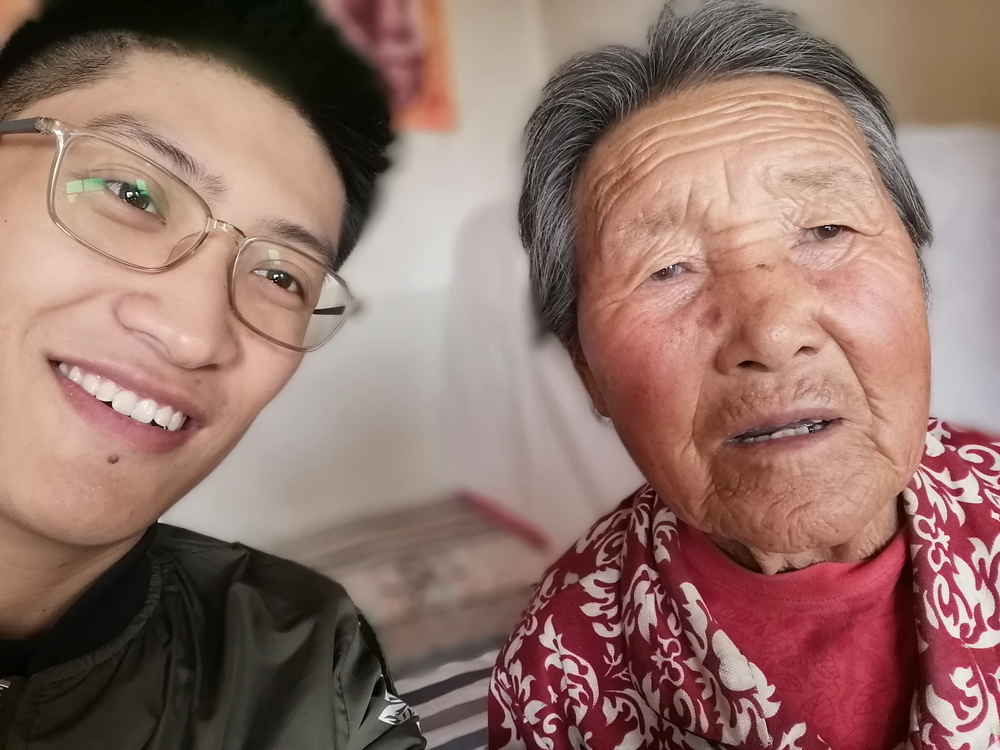
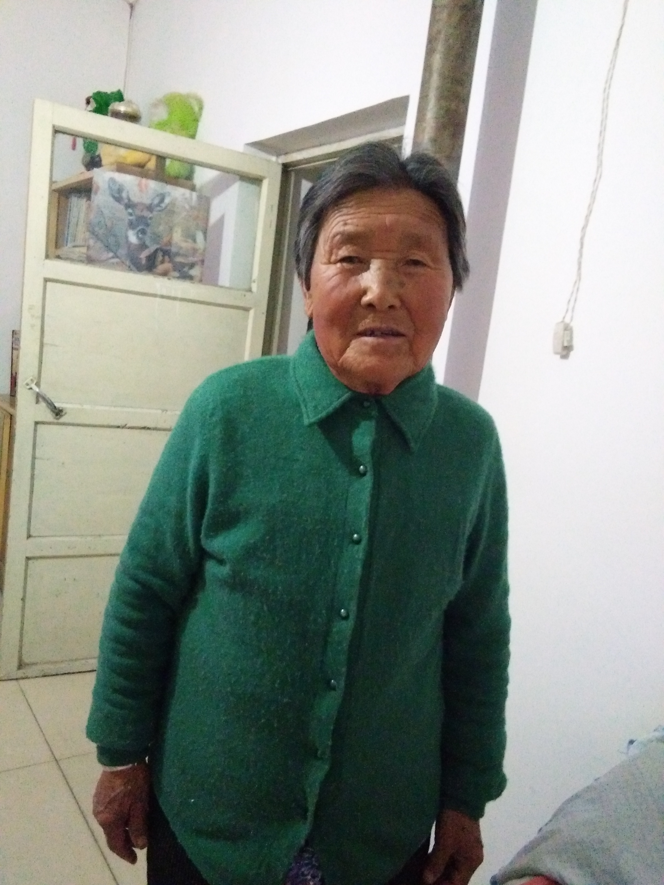
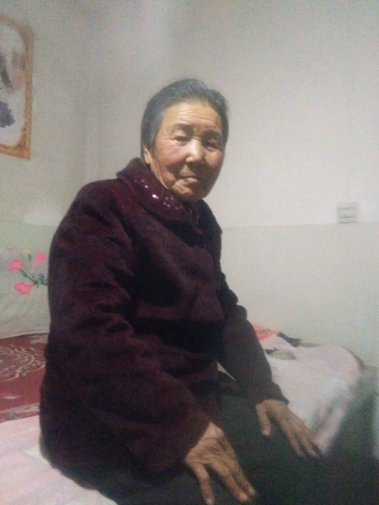
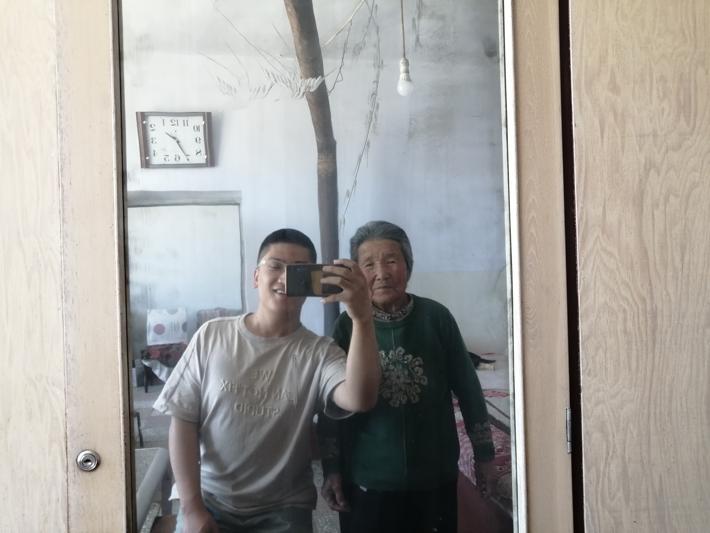
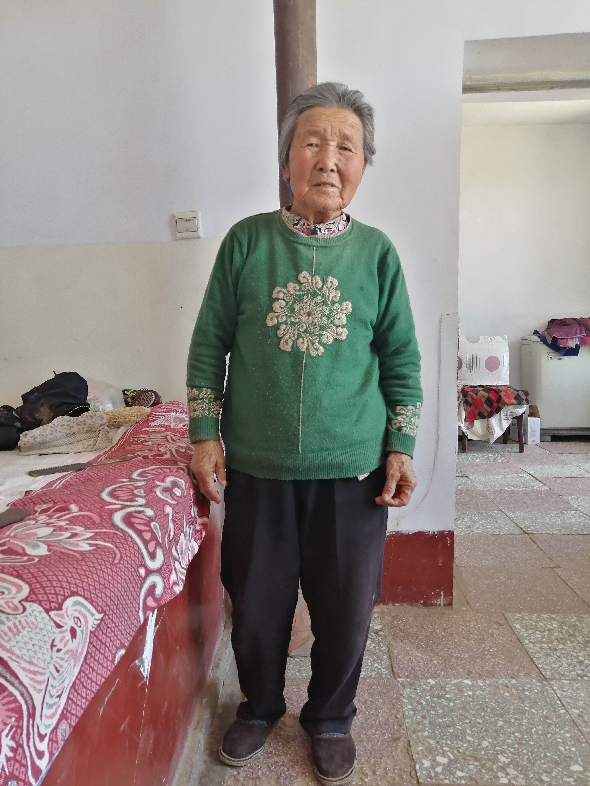
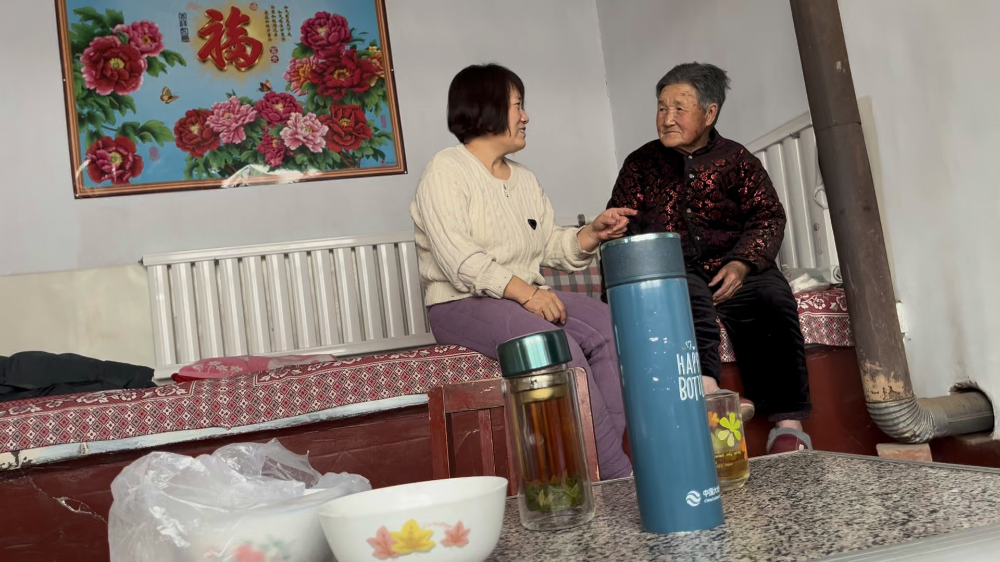
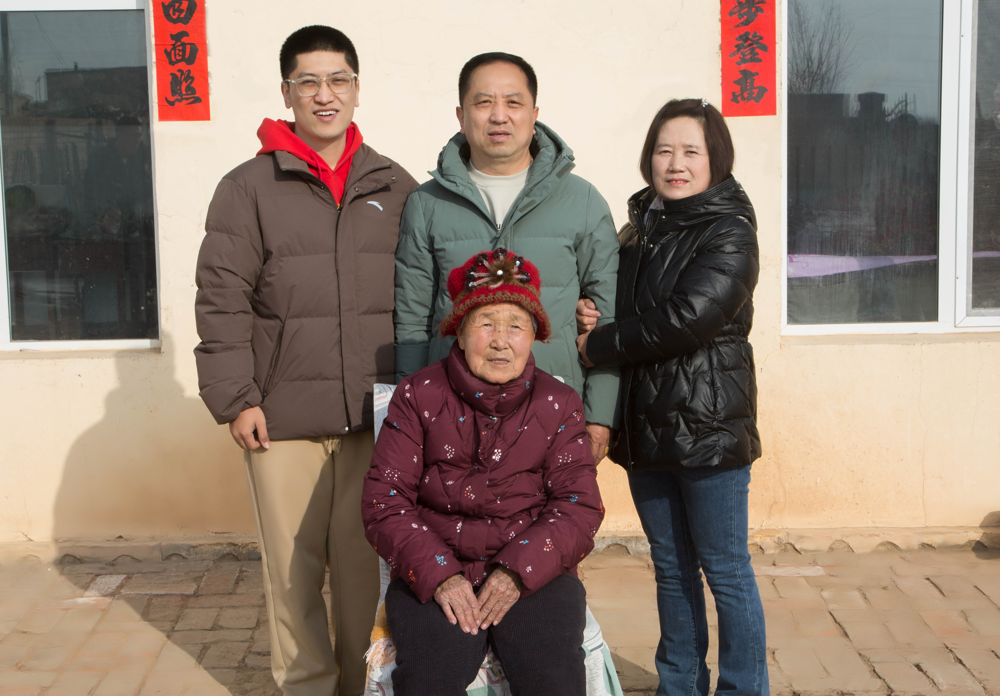
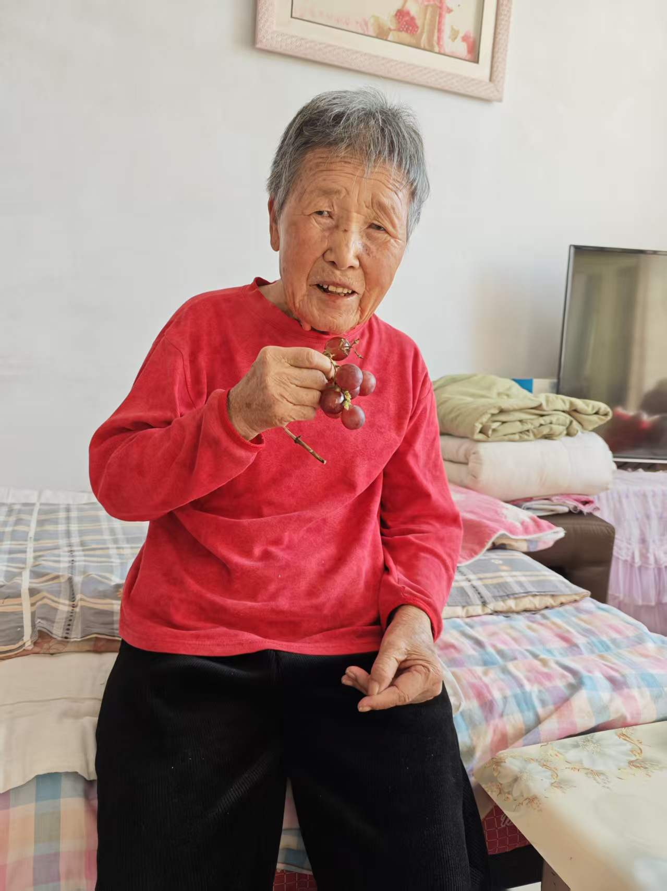

姥姥的那些年
家人的讲述与影像 · 第一版试读
写在前面
我是付博，姥姥的外孙。我想把她的往事写下来，留给家里人，也留给以后的孩子们。
说起姥姥，我最熟悉的是小时候去她家过暑假的日子。院子里的压水井，她烙的油烙饼，到现在还记得。可她年轻时过着怎样的生活，怎样把五个孩子养大，我知道得很少。妈妈和舅舅们记得的，又是我没有经历过的那些年。
有些事，现在还能听姥姥亲口讲；有些事，要听家里人慢慢回忆。我想趁着大家还记得，把它们留下来。日子久了，许多事会忘，写下来，以后就还有地方可以翻看。
这本书从姥姥的早年写起，一直写到今天，也放进家里的照片和声音。希望后来的孩子们读到这里，能多认识一点自己的长辈，知道他们是怎样过日子的。
我们这一家

三代亲属关系
姥姥姓冯，姥爷姓王。他们有四个儿子和一个女儿，女儿排行第五。
家庭关系简图。除标明长子、次子的地方外，下一代的排列不表示长幼。
谁在讲述
书里的“我”是付博，家人的称呼也从我这里说起。王丽琴是我的妈妈，是姥姥的第五个孩子，也是唯一的女儿。四位舅舅按排行，分别是大舅王根喜、二舅王光荣、三舅王光明、四舅王宾。
讲到其他家人的回忆，会先说明他与姥姥的关系，再写名字。引号里保留他们自己的话；妈妈说的“我”，就是妈妈，她说的“母亲”，就是姥姥。
目录
一、小时候的家
二、青年时代与成家
三、养育孩子的那些年
姥姥的女儿——王丽琴的回忆
王丽琴小时候，饿了就去找母亲。
那时候还没包产到户，人们在队里干活，挣工分。家里五个孩子，四个儿子，一个女儿，王丽琴最小。母亲和一位她叫“婶子”的人一起喂猪，父亲在队里当队长。
父亲这个队长，一当就是很多年。从王丽琴开始记事，一直当到她结婚。
王丽琴记得那时的地洞炉子，记得烧玉米、烧糖菜。讲起这些吃食，她说：“那会儿每家每户的小孩都吃不了大饱。”
乡里有人来，母亲还要给来人做饭。这时候，王丽琴也留在那里，等着吃饭。
“我就在那儿不走，吃了饭再走。”
四、子女长大，日子变化
日子慢慢好了
姥姥的女儿——王丽琴的回忆
小时候去找母亲，王丽琴惦记的是吃饭。讲到后来的日子，她记得家里有了肉，也有了酒。包产到户以后，四个哥哥都是壮劳力，家里的生活跟着有了起色。
她说：“一天比一天生活好了。”
五、晚辈记得的暑假
妈妈讲的是她小时候的家。到了我的童年，我也常往姥姥家去。我记得最多的，是在那里过的暑假。
坐车去姥姥家
姥姥的外孙——付博的回忆
印象里，那些应该都是小学时候的事。一放暑假，我就喜欢往姥姥家去。
我们住在陕坝镇里。去姥姥家，要坐2路公交车，沿着省道一直坐到终点，再走大概两三公里，才能到她那个村子。
我在那里有玩伴。四舅王宾家的儿子王志鹏、女儿王雨墨，跟我年纪相近，我们能玩到一起。姥姥也不像妈妈那样管我。亲戚送给她和姥爷的牛肉罐头之类的好东西，他们会拿给我吃。
小时候嘴馋，有好吃的，有人一起玩，就愿意在那里住。
院子里的压水井
姥姥的外孙——付博的回忆
在姥姥家，打水也是我喜欢干的事。院子里那口压水井，要先舀一瓢水倒进去引水，才能把井水压上来。我喜欢玩它，家里要打水，我就去打，打上几桶，再一桶一桶倒进水缸里。
跟姥爷放羊
姥姥的外孙——付博的回忆
有时我也跟着姥爷出去放羊。他带着一根长杆，杆头有个小铲子，用来铲柳树的枝干。铲下来的枝干捆好，一捆一捆放上板车，拉回去喂羊。
板车靠家里的牲畜拉。是驴还是骡子，我已经记不清了。
姥姥的油烙饼
姥姥的外孙——付博的回忆
牛肉罐头之外，我还惦记姥姥烙的油烙饼。
她用的灶在院子里，是砖头和泥土砌的，底下填柴，上面放一口铁锅。烙饼时，我就帮着收集麦杆和晒干的葵花杆。麦杆引火，接着烧葵花杆，火很旺。
姥姥擀饼、烙饼，烙得金黄金黄的，吃着特别酥脆。我爱吃，到现在也忘不掉。

六、后来的日子
过年再回去
姥姥的外孙——付博的回忆
后来回姥姥家，多是在过年的时候了。去舅舅家，我喜欢领压岁钱。到了姥姥家，她也给，我却不想要。她年纪大了，地也种不动了。我领到的压岁钱，还会分一些给她。
上高中以后忙，再后来去呼和浩特上大学，回姥姥家的记忆，便大多留在过年这几天。
院子和村庄变了样
姥姥的外孙——付博的回忆
姥姥家的院子后来也换了样子。小时候是土院子，围墙用树枝围着。后来院子铺好了，树枝围墙换成了砖墙，家里也建了厕所。村里添了几条路，我记得是石板路。
这些变化具体在哪一年，是不是一齐做完的，我已经记不清了。
那时的陕坝
“十个全覆盖”期间，邻近的陕坝镇也有村庄修路、改造院墙，2016年2月的地方报道里留有记录。报道：杭锦后旗陕坝镇环境整治
七、今天
姥姥的外孙——付博 · 2026年9月
如今我在深圳工作，妈妈王丽琴这几天陪着姥姥。妈妈小时候去找母亲吃饭的往事，我想再听她讲讲。姥姥愿意聊的时候，也听她说说以前。
卷末、照片与视频
这些照片里，有姥姥一个人的，也有她和儿女、晚辈们在一起的。母女同坐的那段视频，也放在这里。
姥姥的照片




母女同坐

四个人的合影

一张近照
